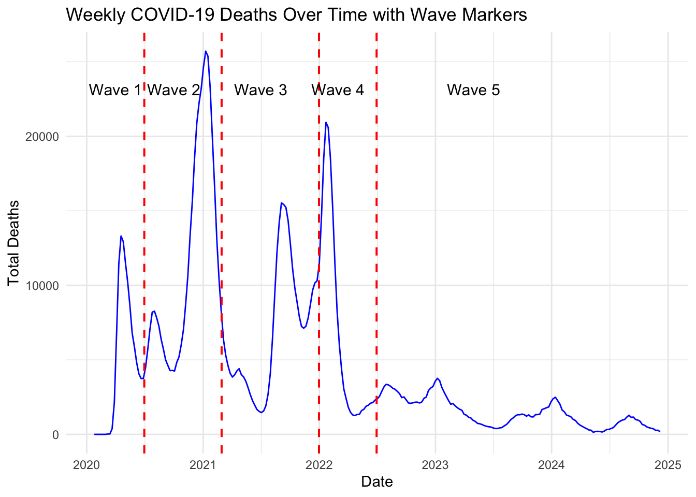
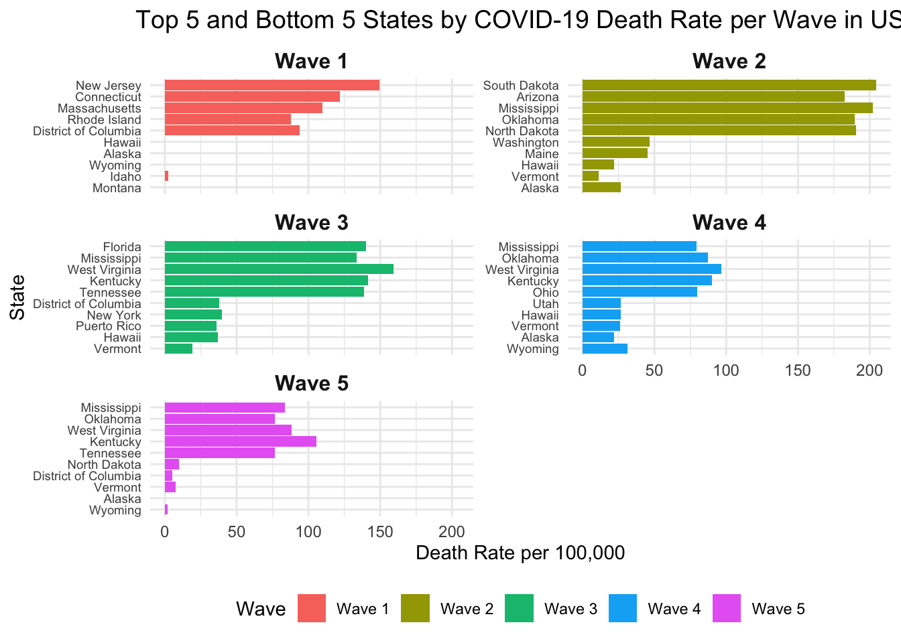
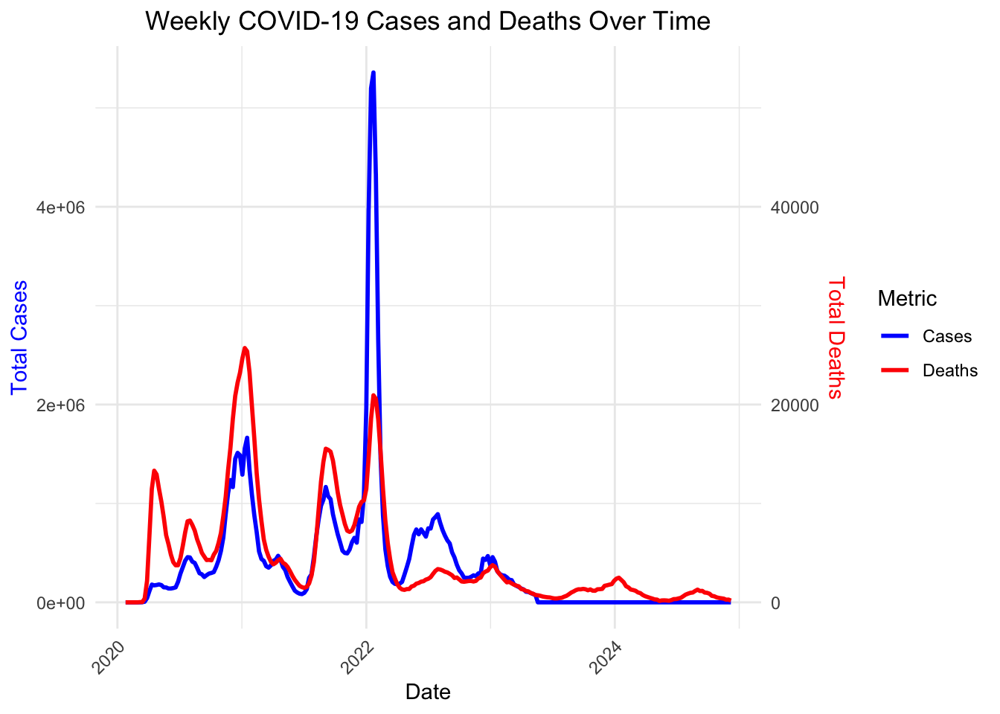
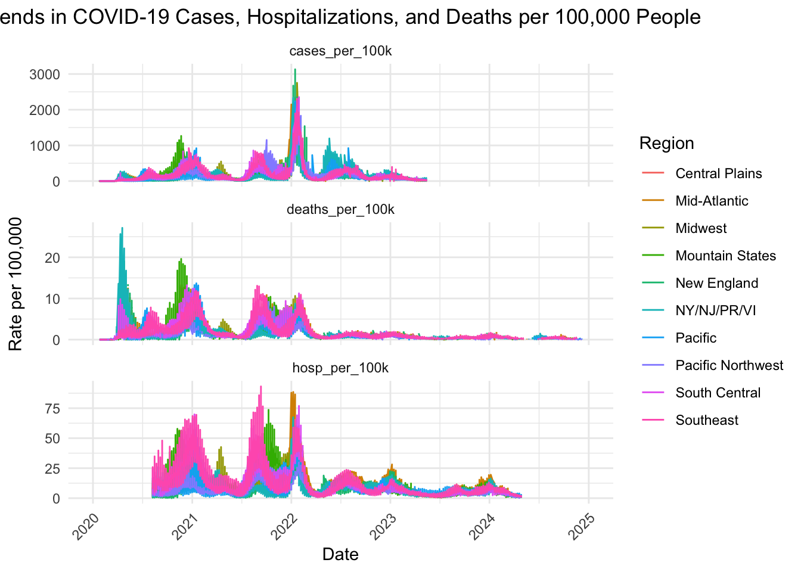

Trends in COVID-19 Cases, Deaths, and Hospitalizations Across States and Waves in the U.S
Abstract
The COVID-19 pandemic’s death rates, number of cases, and hospitalizations tell different stories in different dynamics due to the vaccination rollout, human behavior introduction of new variants, and interventions done by the health ministries. This paper uses weekly COVID-19 data from January 2020 to December 2024 to investigates trends in population-adjusted death rates by state and region, evaluates the pandemic’s evolving virulence, and identifies states that performed better or worse during each wave. Our analysis reveals that there is a lot of variation across the regions with the Mountain States, Midwest and Mid-Atlantic regions having the highest rate of deaths during the early waves in 2020 and 2021. Delta and the Omicron variants had the least case fatality rate, this could be vaccination availability and better treatment was widely available to the people. Vermont, Hawaii and Alaska had a lower death to Mississippi, West Virginia and South Dakota which consistently struggled. There was sharp decline in deaths to cases ratio over the years owing to vaccination, education and the government interventions. These results highlight the importance of timely interventions, regional public health strategies, and ongoing surveillance in mitigating the pandemic’s impact and guiding future responses to emerging infectious threats.
Introduction
The COVID-19 pandemic, caused by SARS-CoV-2, has profoundly impacted global health systems and economies since its emergence in late 2019. As of December 2024, there have been over 700 million confirmed cases and nearly 7 million deaths worldwide [1]. The outbreak has also led to numerous lockdowns which forced many patients to be hospitalized risking the economy and trading of certain countries. New variants do appear to change the course of infections and mortality with the adapting nature of the COVID pandemic, regardless of the fact there are vaccines and improved medicines available to the patients.
The United States has been on the receiving end of the pandemic the most with over 100 million reported cases and around 1.1 million deaths around the world from the onset of the pandemic.[2], [3]. The CDC’s COVID-NET systems also report that they managed to survey around 40,761 of Covid-19 associated hospitalizations between October 2023 and April 2024 with 95.4% of them being within the age of 18 or above. Vaccination has played an important role in managing the elderly population however still 48.6% of the total hospitalizations are still among individuals aged 75 and above which does indicate that numerous resources are still to be conquered.[4], [5].
Studies from other countries reported similar challenges. For instance, in Brazil, the mortality of Covid-19 at the East Region in the first year of the pandemic was 116.2 per hundred thousand inhabitants which translates into 66358 deaths[6]. India experienced severe waves in 2020 and 2021, with COVID-19 contributing to 29% of deaths between June 2020 and July 2021, totaling an estimated 3.2 million deaths[7]. South Africa experienced lower morbidity and mortality because of the Omicron variant, however the hospitals were still under great pressure.[8]. These findings reflect the global variability in COVID-19 outcomes and highlight the need for detailed, region-specific analyses to inform public health strategies.
Despite extensive research on COVID-19, mostly focused on short term trends, there is still limited research that has incorporate population data beyond 2022, which is important is assessing mortality rate in the later part of the pandemic and how these varies across different state and region in the U.S. There is limited understanding of how mortality and virulence have evolved across distinct pandemic waves and how outcomes varied by state. The relationship between mortality trends, vaccination programs, the emergence of new variants such as Delta and Omicron, and improvements in clinical treatments remains poorly understood.
Understanding how COVID-19 altered over time in terms of virulence is crucial for understanding how the circumstances may be handled in future. To address these gaps, this study conducts a comprehensive analysis of mortality, hospitalization, and case data segmented into distinct waves from January 2020 to December 2024. By assessing population-adjusted death rates by region and state and visualizing trends over time, this study provides insights into the pandemic’s progression, regional disparities, and the effectiveness of public health interventions.
The aim of this paper is (1) to classify the pandemic period into separate waves, and recognize the rationale behind such classifications through graphical illustrations, (2) compute death rates by state for each wave and identify states that performed better or worse, and (3) ) assess variations in COVID-19 virulence over time. This analysis will guide public health policy and preparedness for future pandemics by examining the dynamics and variations of COVID-19 effects within the United States region.
Methods
Study Design
This retrospective, cross-sectional study analyzed COVID-19 cases, deaths, hospitalizations, and vaccination rates across all 50 states and Puerto Rico and Washington, D.C., in the United States from January 2021 to December 2024. The datasets that were used were from sources that are published to the public and hence available for use in the study.
Data Source and Collection
U.S. COVID-19 Cases and Deaths by State database available at the CDC (2024) was used to derive COVID- 19 case data. Hospitalization metrics are reflected in the CDC report, COVID-19 Reported Patient Impact and Hospital Capacity by State (CDC, 2024). The counts of mortality data were obtained from the CDC Provisional COVID-19 Death Count by State (2024). CDC COVID-19 Vaccinations in the United States dataset available in the CDC (2024) provided the vaccination data. Population estimates for the years 2021, 2022, 2023 and 2024 were sourced from the US Census Bureau’s population estimates program (US Census Bureau, 2021 to 2023).
Study Settings and Sample Size
The study included all 50 states and Puerto Rico and Washington, D.C., representing diverse geographic regions and populations within the United States. The total U.S. population analyzed was approximately 332 million as of 2023 (U.S. Census Bureau, 2023). Weekly aggregated data were collected for each state, capturing trends in cases, hospitalizations, deaths, and vaccinations. Each state’s data were analyzed individually and compared regionally to identify disparities and patterns in COVID-19 outcomes. Data were processed over the full pandemic period, from the beginning of 2021 to December 2024.
Data Processing and Wrangling
Data wrangling and analysis were conducted in R (v4.3) with libraries such as httr2, tidyr, dplyr, and others. Publicly available GitHub datasets provided U.S. state-region mappings, and 2024 population estimates were derived using the previous four years’ averages. State-wise weekly COVID-19 cases were aggregated and cleaned for analysis. The pandemic was segmented into five waves: Wave 1 (Jan–Jun 2020) marked the initial outbreak, Wave 2 (Jul 2020–Feb 2021) saw surges linked to reopening and holiday gatherings, Wave 3 (Mar–Dec 2021) was driven by the Delta variant, Wave 4 (Jan–Jun 2022) by the Omicron variant, and Wave 5 (Jul 2022–Dec 2024) reflected reduced mortality due to vaccinations and improved treatments. Hospitalization data were matched to state population records, while death counts distinguished COVID-19-related from non-COVID-19-related mortality. This structured approach facilitated an in-depth analysis of pandemic trends across time and regions.
Variables
The final data sets included in this analysis was 13,260 observations and 13 variables, weekly data spanning from 25th January 2020 - 7th December 2024. Details of all the variables included in this data is in supplementary methods
Missing Data
Missing data was prevalent across several key variables, including COVID-19 cases, hospitalizations, deaths, and vaccination rates. An analysis of the missing data revealed significant gaps, particularly in vaccination and mortality datasets. The missing cases variable showed 4,264 missing entries, while hospitalizations had 3,122 missing records. Deaths data exhibited 3,101 missing values, and vaccination completion rates (series_complete) had the highest number of missing entries at 6,708. A detailed examination suggests that the missing data were completely at random (MCAR), meaning the probability of a missing value does not depend on the observed or unobserved data. This assumption permits the analysis to proceed without introducing systematic bias. The primary reasons for these missing data points include changes in public health priorities, reduced frequency of reporting, and the discontinuation of certain data collection programs after widespread vaccination
Statistical Analysis
Descriptive analyses were conducted to summarize key metrics, including COVID-19 cases, deaths, hospitalizations, and vaccination rates, stratified by state and region. Weekly trends were analyzed to identify temporal patterns across distinct waves of the pandemic. These waves were defined using significant peaks in mortality data. Regional disparities in outcomes were assessed to evaluate the geographic variability of pandemic severity. Visualization of temporal and regional trends was conducted using ggplot2, and interactive tabular results were presented using kableExtra for clarity. Statistical analyses were performed in R (version 4.4.1)
Data Collection and Management
All datasets were stored securely, and data cleaning was conducted concurrently with data processing to ensure accuracy and reproducibility. Data were aggregated at the state level, with no individual-level identifiers included, ensuring confidentiality and privacy. Data visualizations, including time series plots, heat maps, line graphs, were produced to highlight trends in COVID-19 outcomes. The study relied on publicly available data, and therefore, ethical approval was not required. Potential limitations include missing data, and incomplete reporting during specific periods, which may have influenced the findings..
Results
The figure above shows the weekly COVID-19 mortality trends in the United States from January 2020 to December 2024, divided into five distinct waves. Wave 1 (January 2020 – June 2020) marks the initial surge in deaths. Wave 2 (July 2020 – February 2021) experienced the highest mortality peak due to widespread reopening and holiday gatherings. Wave 3 (March 2021 – December 2021) saw deaths rise again, driven by the Delta variant. Wave 4 (January 2022 – June 2022) displayed a sharp but brief mortality spike caused by the Omicron variant. Wave 5 (July 2022 – December 2024) shows a sustained decline in deaths, reflecting the impact of vaccination, therapeutics, and population immunity.(Figure1)

The above figure shows significant state-level variations in COVID-19 death rates across the five waves. In Wave 1, Northeastern states like New Jersey and Connecticut had the highest death rates, while Hawaii and Alaska had the lowest. Wave 2 saw peaks in South Dakota, Arizona, and Mississippi, while Vermont and Hawaii fared better. The Delta-driven Wave 3 affected Florida and Mississippi severely, while Vermont and Puerto Rico experienced lower mortality. In Wave 4, Mississippi and Oklahoma recorded high death rates, while Vermont and Hawaii had lower rates. By Wave 5, mortality decreased, but Mississippi and West Virginia still faced elevated rates, underscoring persistent regional disparities.(Figure 2)

The above figure reveals weekly trends in COVID-19 cases and deaths from January 2020 to December 2024. Early in the pandemic (Wave 1), deaths were high relative to cases due to initial virulence and healthcare challenges. In Waves 2 and 3, cases and deaths surged with the Delta variant. The Omicron-driven Wave 4 saw over 4 million weekly cases, but deaths did not rise proportionally due to vaccination and reduced virulence. By Wave 5, cases declined significantly, while deaths fluctuated among vulnerable populations. The overall trend shows decreasing COVID-19 virulence over time. (Figure 3)

The figure above shows regional trends in COVID-19 cases, hospitalizations, and deaths per 100,000 people. The Mountain States, Midwest, and Mid-Atlantic regions had major case surges during the Delta and Omicron waves. Death rates followed similar patterns, with the Midwest and Mountain States experiencing high mortality in late 2020 and 2021. Hospitalization rates were elevated in the Mid-Atlantic and Mountain States during major waves, particularly during the Omicron surge. Post-2022, case, death, and hospitalization rates declined, reflecting the impact of vaccination and improved clinical management. (Figure 4)
The table above provides a state-level breakdown of COVID-19 severity metrics. Alaska (159 per 100k), Rhode Island (158 per 100k), and Kentucky (151 per 100k) recorded the highest case rates. Despite high case rates, death rates remained low (1-2 per 100k) across most states. Hospitalization rates varied, with Kentucky (14 per 100k) and West Virginia (11 per 100k) indicating higher healthcare strain. States like Hawaii (102 per 100k) and Vermont (94 per 100k) reported lower case and hospitalization rates, reflecting effective mitigation efforts. (Table 1)
The table above shows regional disparities in COVID-19 outcomes. The Southeast reported the highest total cases (22,952,265) and deaths (276,363), with a case rate of 131 per 100k and a death rate of 2 per 100k. The Mountain States (124 per 100k) and Midwest (123 per 100k) had elevated case rates. The Pacific Northwest and NY/NJ/PR/VI regions recorded the lowest case rates (100 and 94 per 100k, respectively). Hospitalization rates were highest in the Southeast and South Central regions (9 per 100k). These findings emphasize the need for region-specific public health strategies to address pandemic severity. (Table 2)
Discussion
This study examines the progression of COVID-19 deaths, cases, and hospitalizations in the United States over five waves from January 2020 to December 2024. Our results show significant differences in outcomes across states, regions, and time periods, highlighting how complex and uneven the pandemic’s impact has been.
Our analysis of weekly deaths (Figure 1) shows five distinct waves. The first wave (January–June 2020) marked the initial outbreak, with high death rates in the Northeast due to unprepared hospitals and delayed public health actions[9], [10]. The second wave (July 2020–February 2021) had the highest number of deaths, likely due to relaxed restrictions, holiday gatherings, and increased virus spread in the Midwest and South[11]
The third wave (March–December 2021) was driven by the Delta variant, known for being more contagious and severe[12], [13]. In the fourth wave (January–June 2022), the Omicron variant spread quickly, causing many infections but fewer deaths compared to Delta. This pattern matched findings in South Africa and the UK, where Omicron caused less severe illness[14], [15]. In the fifth wave (July 2022–December 2024), deaths continued to decline, thanks to widespread vaccination, better treatments, and growing immunity in the population[16].
Our findings reveal that death rates varied greatly between states and regions (Figure 2, Table 1, Table 2). During the first wave, states in the Northeast like New Jersey and Massachusetts had the highest death rates These areas had high population density and hospitals that were quickly overwhelmed. In contrast, states like Hawaii, Alaska, and Wyoming had lower death rates due to effective public health measures and smaller populations.[17].
COVID-19 mortality rates have been disproportionately higher in the Southern United States compared to other regions. Since May 31, 2020, the South experienced COVID-19 mortality 26% higher than the national rate, while the Northeast’s rate was 42% lower. The South has accounted for 48% of COVID-19 deaths while making up only 38% of the population. Factors contributing to these regional disparities include behavioral differences, policy implementation, higher rates of pre-existing conditions in rural areas, inadequate healthcare access, and lower vaccination rates in rural counties[18].
Figure 3 shows how cases, hospitalizations, and deaths changed over time. In the first wave, the death rate appeared high due to limited testing and unprepared healthcare systems[19].. The Omicron wave saw a surge in cases, but lower mortality rates compared to Delta, with studies showing a mortality risk ratio of 1.671 between Delta and Omicron variants[20]. This reduced mortality during Omicron was likely due to widespread vaccination, natural immunity, and potentially lower virulence of the variant23. By later waves, both cases and hospitalizations decreased, reflecting the cumulative impact of vaccines and public health measures.
Figure 4 highlights differences in cases and hospitalizations by region. Mountain States, Midwest, and Mid-Atlantic regions experienced significant case spikes during the Delta and Omicron waves[21]. Southeast and South-Central regions, particularly the East South-Central region, had higher hospitalization rates, possibly due to higher chronic disease prevalence and lower vaccination coverage. Vermont and Hawaii maintained lower hospitalization and fatality rates[22].
Public Health Implications
Our results show the complex relationship between the virus, public health measures, and immunity. Southern and Midwestern states, which had higher death rates, need focused efforts to improve healthcare access and increase vaccination. The decline in deaths during the fifth wave highlights the importance of vaccination and new treatments in controlling the virus Continued monitoring and flexible public health policies are essential to address regional challenges.
Limitation and Strength
This study’s strengths include analyzing COVID-19 trends over a long period and comparing data across states and regions. However, there are some limitations, such as possible underreporting of deaths and missing data on social factors and pre-existing conditions. These challenges have been noted in other studies. Future research should explore how these factors affected the pandemic’s outcomes.
Conclusion
The COVID-19 pandemic had a varied and widespread impact in the United States. Our study shows clear differences in deaths, cases, and hospitalizations over time and across regions. Public health measures, healthcare capacity, and vaccination played key roles in reducing severe outcomes. These findings can help guide strategies for future pandemics and address regional health disparities.
References
[1] “COVID-19 epidemiological update – 15 July 2024.” Accessed: Dec. 16, 2024. [Online]. Available: https://www.who.int/publications/m/item/covid-19-epidemiological-update-edition-169
[2] “Provisional COVID-19 Mortality Surveillance.” Accessed: Dec. 16, 2024. [Online]. Available: https://www.cdc.gov/nchs/nvss/vsrr/covid19/index.htm
[3] “COVID-19 Death Data and Resources - National Vital Statistics System.” Accessed: Dec. 16, 2024. [Online]. Available: https://www.cdc.gov/nchs/nvss/covid-19.htm
[4] C. A. Taylor et al., “COVID-19–Associated Hospitalizations Among U.S. Adults Aged ≥18 Years — COVID-NET, 12 States, October 2023–April 2024,” 2024. [Online]. Available: https://www.cdc.gov/covidvaxview/weekly-dashboard/adult-vaccination-
[5] C. A. Taylor et al., “COVID-19–Associated Hospitalizations Among U.S. Adults Aged ≥18 Years — COVID-NET, 12 States, October 2023–April 2024,” MMWR Morb Mortal Wkly Rep, vol. 73, no. 39, pp. 869–875, Oct. 2024, doi: 10.15585/MMWR.MM7339A2.
[6] L. A. Andrade et al., “Spatiotemporal Pattern of COVID-19–Related Mortality during the First Year of the Pandemic in Brazil: A Population-based Study in a Region of High Social Vulnerability,” Am J Trop Med Hyg, vol. 106, no. 1, p. 132, Jan. 2021, doi: 10.4269/AJTMH.21-0744.
[7] P. Jha et al., “COVID mortality in India: National survey data and health facility deaths,” Science, vol. 375, no. 6581, p. 667, Feb. 2022, doi: 10.1126/SCIENCE.ABM5154.
[8] C. Maslo, R. Friedland, M. Toubkin, A. Laubscher, T. Akaloo, and B. Kama, “Characteristics and Outcomes of Hospitalized Patients in South Africa During the COVID-19 Omicron Wave Compared With Previous Waves,” JAMA, vol. 327, no. 6, p. 583, Feb. 2021, doi: 10.1001/JAMA.2021.24868.
[9] S. Richardson et al., “Presenting Characteristics, Comorbidities, and Outcomes Among 5700 Patients Hospitalized With COVID-19 in the New York City Area,” JAMA, vol. 323, no. 20, pp. 2052–2059, May 2020, doi: 10.1001/JAMA.2020.6775.
[10] “COVID-19: Latest Data - NYC Health.” Accessed: Dec. 19, 2024. [Online]. Available: https://www.nyc.gov/site/doh/covid/covid-19-data.page
[11] S. H. Woolf, D. A. Chapman, R. T. Sabo, and E. B. Zimmerman, “Excess Deaths From COVID-19 and Other Causes in the US, March 1, 2020, to January 2, 2021,” JAMA, vol. 325, no. 17, pp. 1786–1789, May 2021, doi: 10.1001/JAMA.2021.5199.
[12] D. S. La-Cruz Hernández, S. Isaac De La Cruz-Hernández, S. Isaac De La-Cruz Hernández, and G. Barrera-Badillo, “The Delta Variant Triggers the Third Wave of COVID-19 in Mexico,” Disaster Med Public Health Prep, p. 1, Dec. 2022, doi: 10.1017/DMP.2022.49.
[13] J. Fokam et al., “Genomic surveillance of SARS-CoV-2 reveals highest severity and mortality of delta over other variants: evidence from Cameroon,” Scientific Reports 2023 13:1, vol. 13, no. 1, pp. 1–10, Dec. 2023, doi: 10.1038/s41598-023-48773-3.
[14] A. Sheikh et al., “Severity of omicron variant of concern and effectiveness of vaccine boosters against symptomatic disease in Scotland (EAVE II): a national cohort study with nested test-negative design,” Lancet Infect Dis, vol. 22, no. 7, p. 959, Jul. 2022, doi: 10.1016/S1473-3099(22)00141-4.
[15] C. Maslo and M. Toubkin, “Characteristics and Outcomes of Hospitalized Patients in South Africa During the COVID-19 Omicron Wave—Reply,” JAMA, vol. 327, no. 21, pp. 2148–2148, Jun. 2022, doi: 10.1001/JAMA.2022.5575.
[16] “NVSS - Provisional Death Counts for COVID-19 - Executive Summary.” Accessed: Dec. 19, 2024. [Online]. Available: https://www.cdc.gov/nchs/covid19/mortality-overview.htm
[17] “The Lancet: Largest US state-by-state analysis of COVID-19 impact reveals the driving forces behind variations in health, education, and economic performance | Institute for Health Metrics and Evaluation.” Accessed: Dec. 19, 2024. [Online]. Available: https://www.healthdata.org/news-events/newsroom/news-releases/lancet-largest-us-state-state-analysis-covid-19-impact-reveals
[18] “Higher COVID-19 Death Rates in the Southern U.S. Due to Behavior Differences | School of Health | Georgetown University.” Accessed: Dec. 19, 2024. [Online]. Available: https://health.georgetown.edu/news-story/higher-covid-19-death-rates-in-the-southern-u-s-due-to-behavior-differences/
[19] S. Vig et al., “Mortality in Two Waves of COVID-19: A Comparative Analysis of a Tertiary Care Hospital in India,” Cureus, vol. 15, no. 9, p. e45025, Sep. 2023, doi: 10.7759/CUREUS.45025.
[20] J. X. Li, P. L. Liao, J. C. C. Wei, S. B. Hsu, and C. J. Yeh, “A chronological review of COVID-19 case fatality rate and its secular trend and investigation of all-cause mortality and hospitalization during the Delta and Omicron waves in the United States: a retrospective cohort study,” Front Public Health, vol. 11, 2023, doi: 10.3389/FPUBH.2023.1143650.
[21] “COVIDView Summary ending on October 17, 2020 | CDC.” Accessed: Dec. 19, 2024. [Online]. Available: https://archive.cdc.gov/www_cdc_gov/coronavirus/2019-ncov/covid-data/covidview/past-reports/10232020.html
[22] “VDH: COVID cases up, but serious cases remain low | Vermont Business Magazine.” Accessed: Dec. 19, 2024. [Online]. Available: https://vermontbiz.com/news/2024/november/12/vdh-covid-cases-serious-cases-remain-low